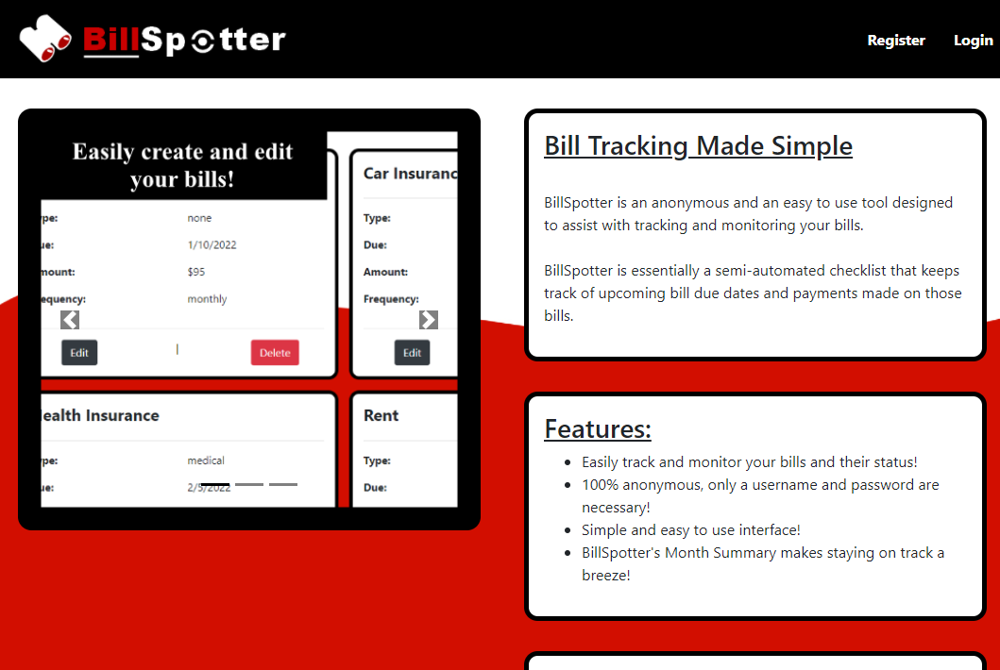
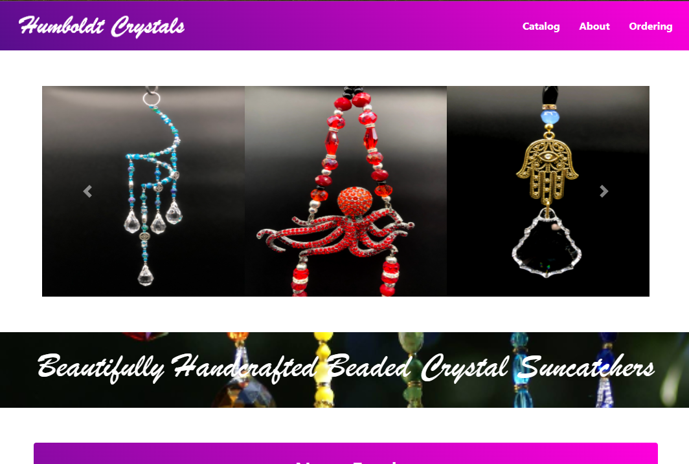

Current Projects
(click on a site to open in new window)
Bill Spotter BillSpotter is a financial web-app I am currently developing. It's main purpose is to help track payments made on your bills, and essentially works like an online checklist where-in you can create new entries and then "cross them off" after you have made the payment. New bills are automatically generated after making a payment if they are re-occuring.
Humboldt Crystals Humboldt Crystals is a website I am working on for a local artist. She regularly attends the craft fairs that happen in the area, but wanted expand her pressence onto the internet a bit more, as well as to provide a portal for potential customers to view her wares.